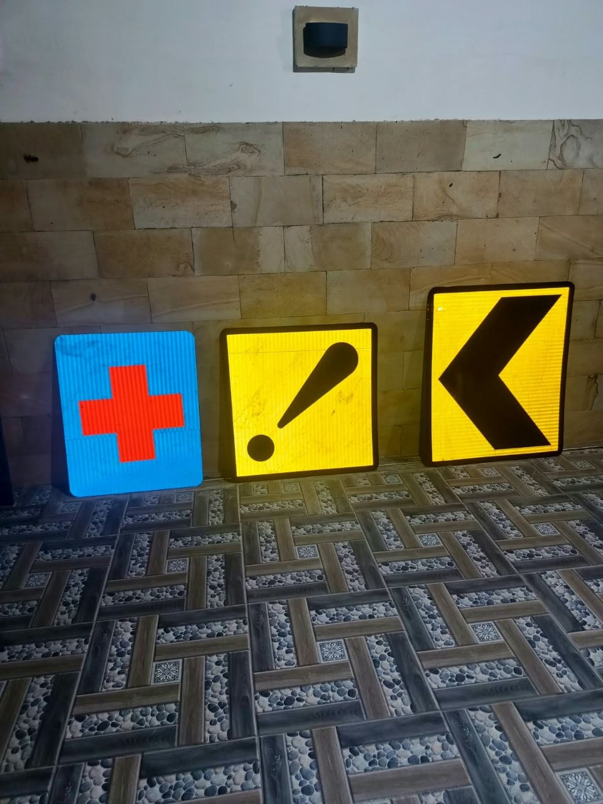
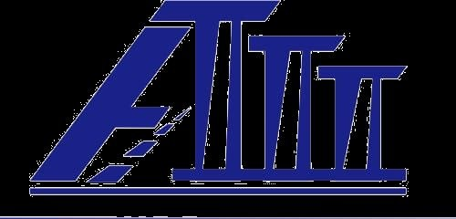
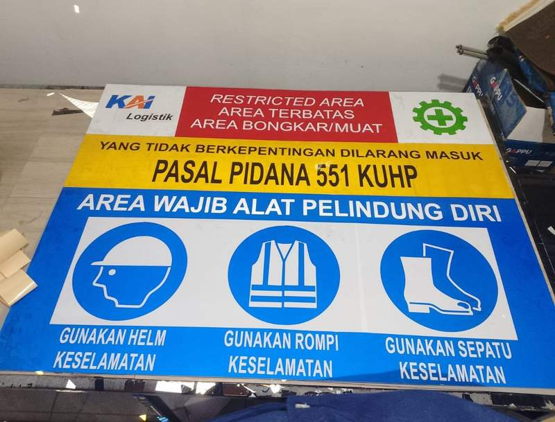
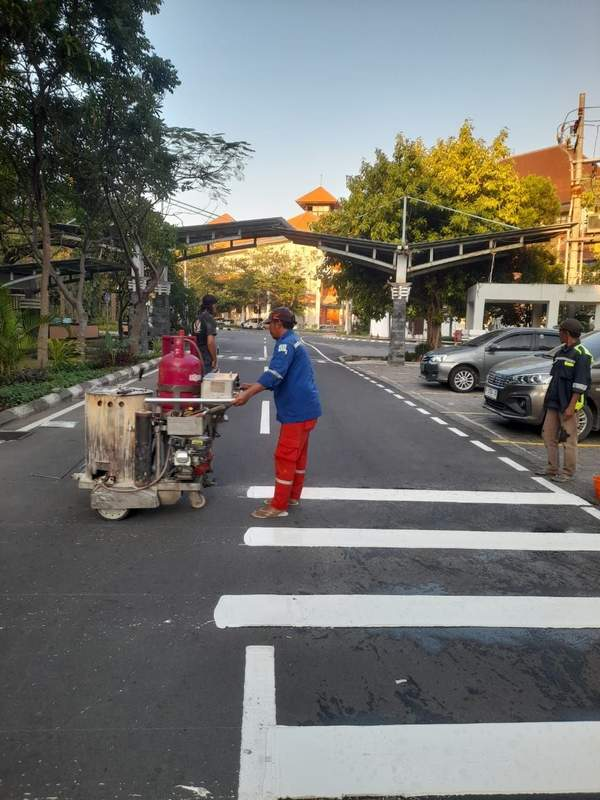
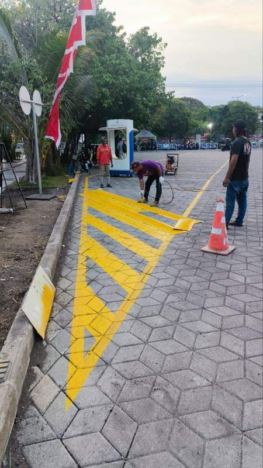
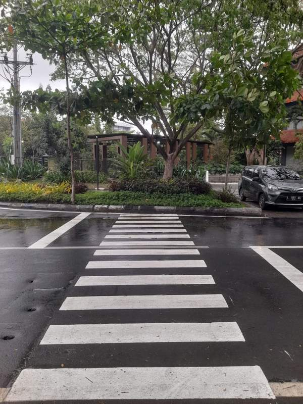
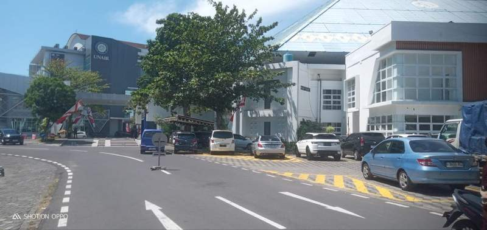
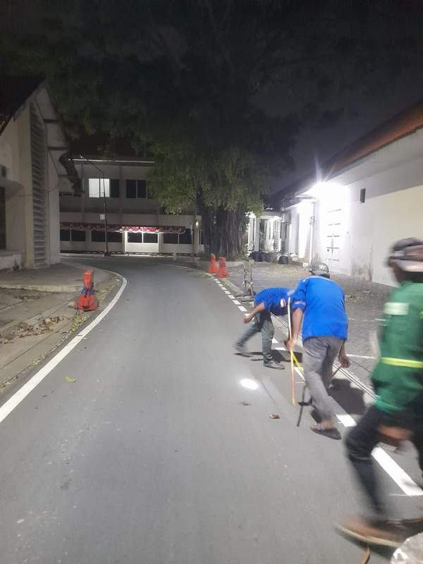

Rambu keselamatan
Rambu untuk area proyek, jalan lingkungan, fasilitas umum, kawasan industri, gudang, sekolah, perumahan, dan kebutuhan pengaturan lalu lintas lainnya.

CV. ANUGERAH TIGA PILARSupplier & General ContractorKonsultasiKami melayani rambu lalu lintas dan marka jalan untuk membantu menciptakan area yang lebih tertib, jelas, dan aman bagi setiap pengguna jalan.
scroll to explore ↓Informasi dan peringatan yang membantu pengguna jalan mengambil keputusan dengan lebih cepat.

Rambu untuk area proyek, jalan lingkungan, fasilitas umum, kawasan industri, gudang, sekolah, perumahan, dan kebutuhan pengaturan lalu lintas lainnya.

Contoh rambu peringatan area bongkar muat dengan informasi larangan masuk dan kewajiban penggunaan perlengkapan keselamatan kerja.
Garis, simbol, dan pembagian area yang membuat alur pergerakan lebih terarah.

Marka tengah, marka tepi, zebra cross, panah arah, area parkir, jalur kendaraan, jalur pedestrian, dan kebutuhan marka area lainnya.

Dokumentasi pengerjaan garis batas, area hatch kuning, jalur kendaraan, serta penataan area agar lebih tertib dan mudah dipahami.



Hal-hal yang penting dalam pekerjaan rambu dan marka bukan cuma hasil akhirnya, tapi juga prosesnya.
Kami membantu memahami kebutuhan area, fungsi rambu, jenis marka, serta penempatan yang diperlukan sebelum pekerjaan dilakukan.
Rambu dan marka harus mudah terlihat, mudah dipahami, dan sesuai dengan kondisi area penggunaannya.
Detail pemasangan, kerapian garis, kebersihan area, dan tampilan akhir menjadi bagian penting dari pekerjaan.
Simple, jelas, dan bisa dikonsultasikan dari awal.
Ceritakan lokasi, kebutuhan, ukuran area, dan jenis pekerjaan yang diinginkan.
Bahas kondisi lapangan, pilihan produk, penempatan, warna, serta teknis pengerjaan.
Anda menerima rincian kebutuhan pekerjaan yang dapat disesuaikan dengan proyek.
Tim melaksanakan pekerjaan sesuai hasil pembahasan dan kesepakatan.
Bisa. Silakan konsultasikan kebutuhan dan lokasi pekerjaan agar dapat dibahas pilihan yang paling sesuai.
Untuk kebutuhan survey, silakan hubungi kami terlebih dahulu dengan mengirimkan lokasi dan gambaran pekerjaan.
Kebutuhan dapat meliputi marka tepi, marka tengah, zebra cross, panah arah, parkir, jalur kendaraan, dan marka area sesuai permintaan.
Kirim foto lokasi, ukuran perkiraan, alamat proyek, dan kebutuhan rambu atau marka melalui WhatsApp.
Hubungi kami untuk konsultasi kebutuhan rambu lalu lintas dan marka jalan.
+62 857-0838-3985 · +62 855-0757-7775
anugerah.3pilar@gmail.com
Perumahan Puri Asta Kencana Blok D No. 18, Gresik — Jawa Timur